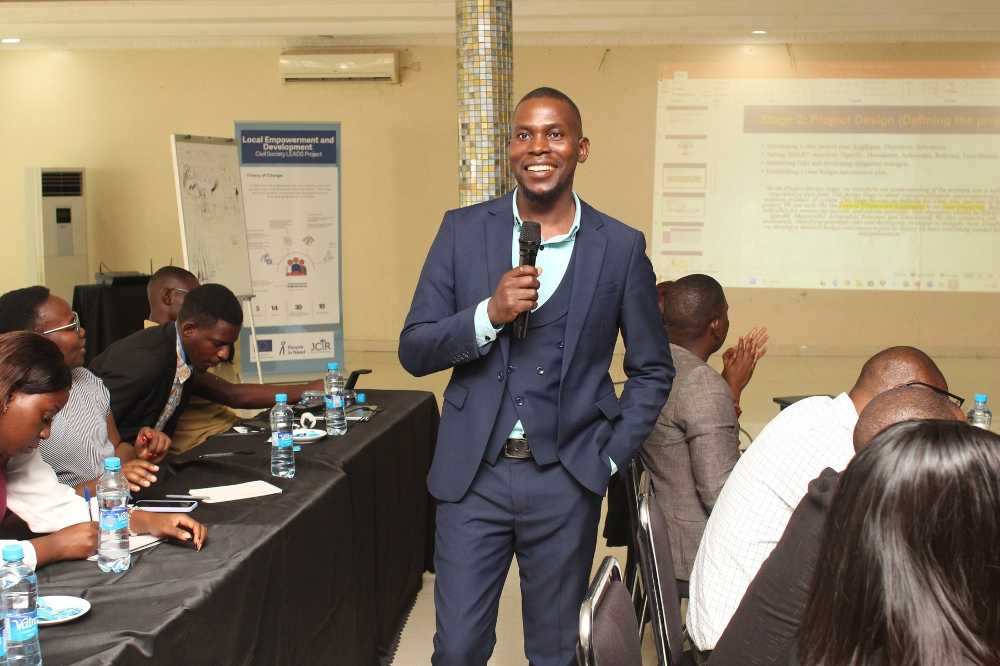
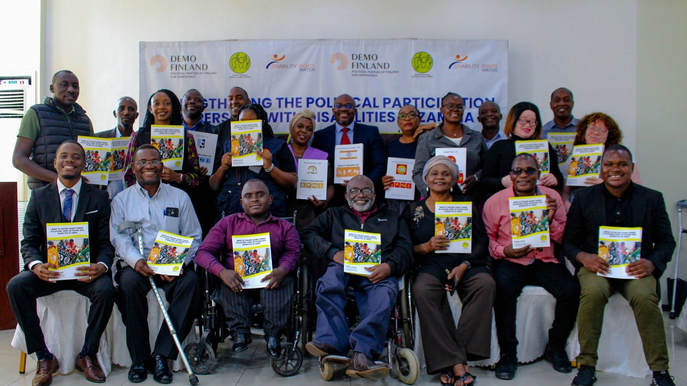
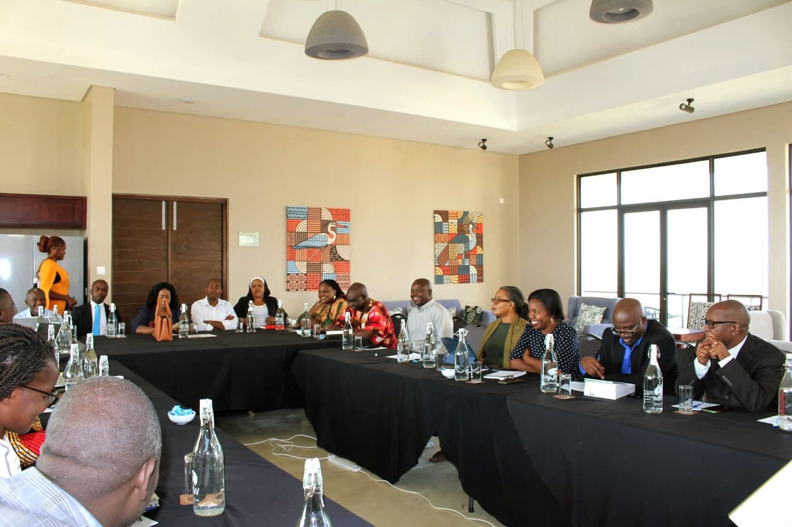
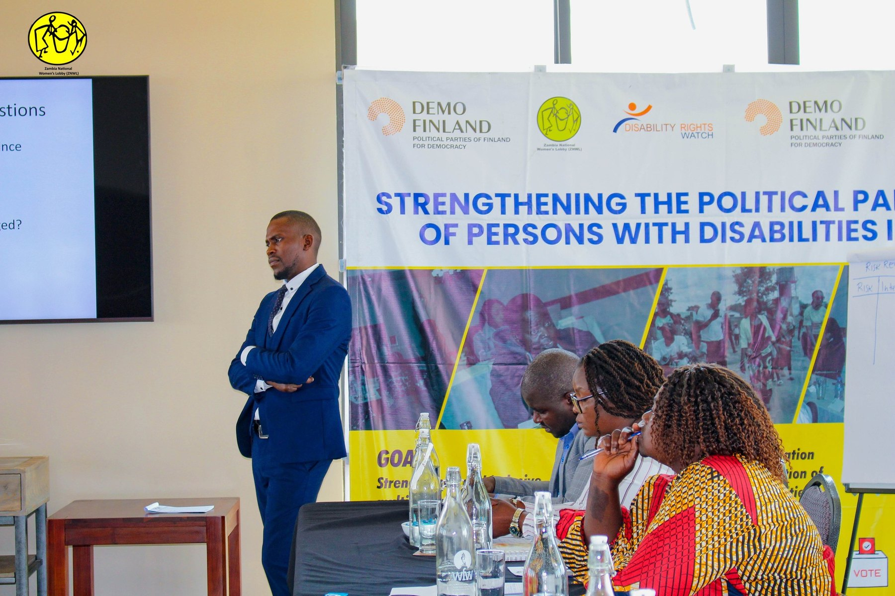
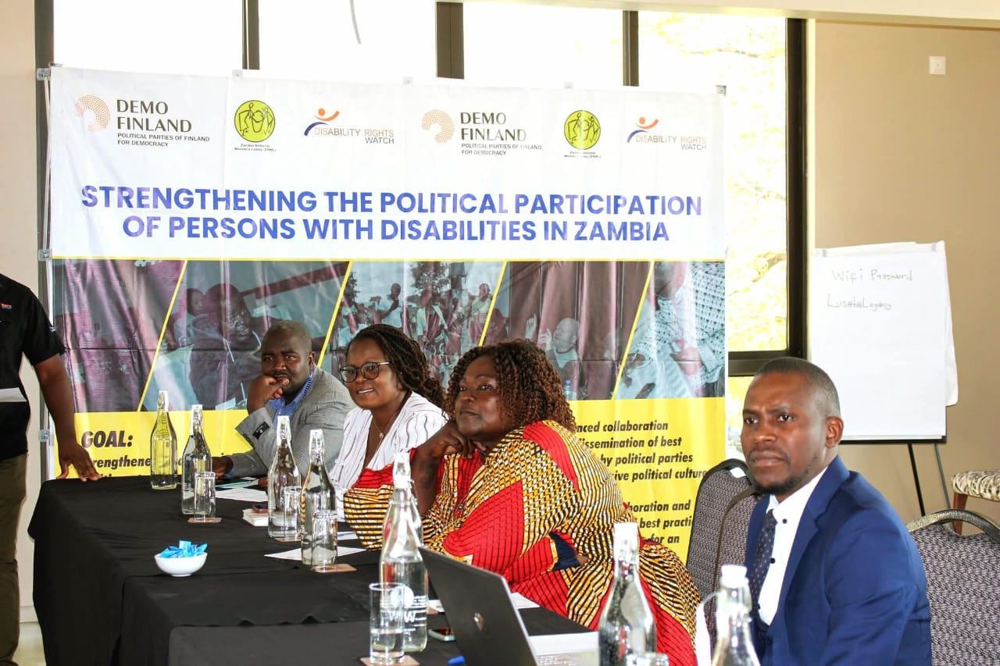
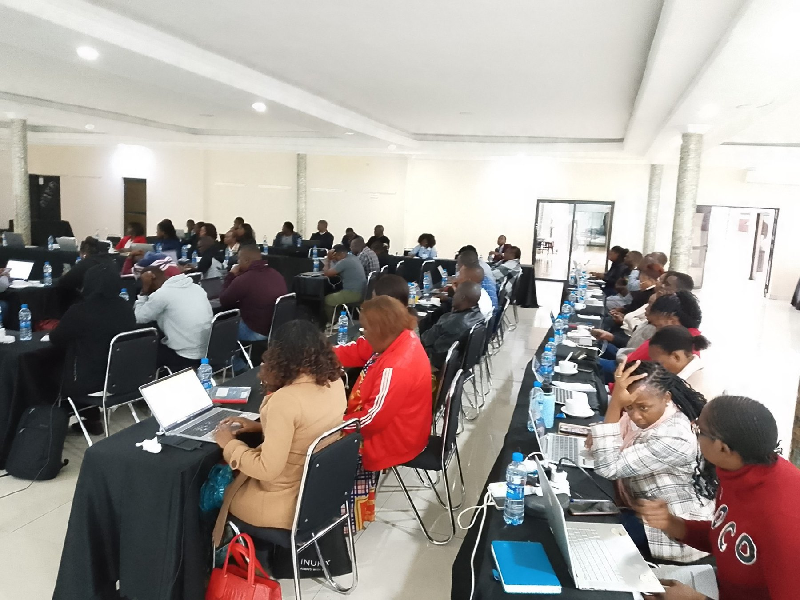
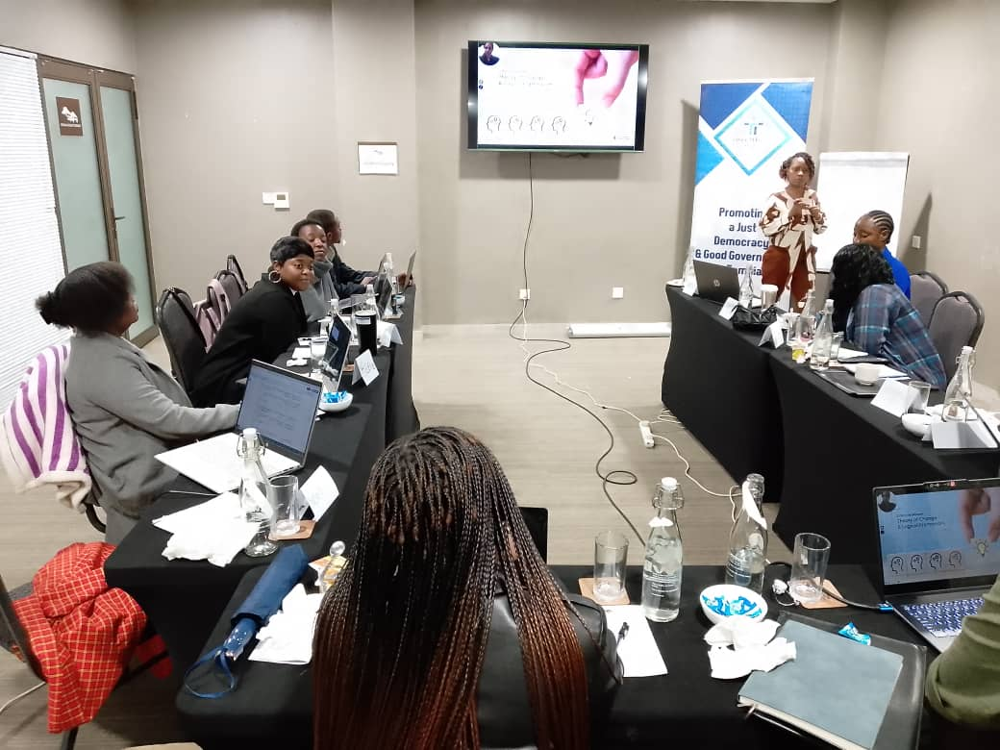
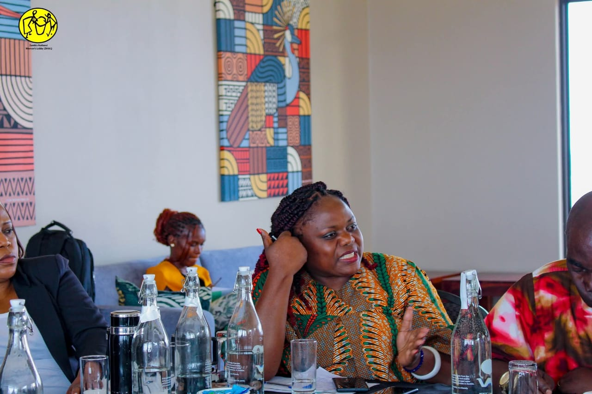
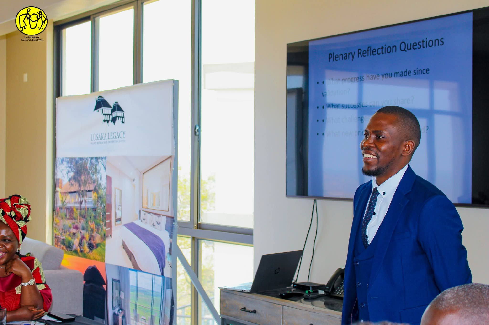

Evidence-led
We use credible information and appropriate methods to support sound analysis and decision-making.
Independent research & consultancy
We work with institutions, civil society and development partners to turn research into practical action, stronger organisations and better-informed policy.
Locally grounded. Evidence-led. Focused on practical results.


About CERCS
The Centre for Educational Research and Consultancy Services (CERCS) is a Zambia-based research and advisory organisation specialising in education systems strengthening, governance and institutional development.
CERCS provides evidence-based research, policy analysis and technical advisory services to government institutions, civil society organisations and development partners. We combine analytical rigour with context-sensitive implementation support to inform decisions, strengthen institutional performance and contribute to inclusive and sustainable development.
Explore a collaboration →
CERCS in practice · Lusaka, ZambiaWe bring people, evidence and institutional priorities together—turning research and consultation into clear decisions, stronger systems and practical next steps.
We use credible information and appropriate methods to support sound analysis and decision-making.
We recognise local realities, stakeholder perspectives and the environments in which institutions operate.
We focus on recommendations, tools and learning that clients can use in practice.
What we do
Flexible support tailored to the needs, context and objectives of each assignment.

Research that informs decisionsBaseline and endline studies, needs assessments, mixed-methods research, programme evaluations, literature reviews and evidence synthesis.
Discuss this service ↗
Policy that responds to contextPolicy reviews, policy briefs, governance analysis, stakeholder mapping and institutional assessments to inform strategic choices.
Discuss this service ↗
Plans shaped with stakeholdersStrategy development and review, situational analysis, results frameworks, theory of change and implementation planning.
Discuss this service ↗Organisational capacity assessments, governance and systems strengthening, action planning and institutional learning.
Discuss this service ↗Practical workshops and facilitated learning in research methods, project cycle management, partnership management and organisational development.
Discuss this service ↗We can scope an approach around your questions, stakeholders, timelines and intended outcomes.
Start a conversation →Our approach
Every assignment begins with a clear understanding of the decision to be made and the people the work needs to serve.
Clarify the problem, intended users, stakeholder landscape and scope of work.
Select proportionate methods, credible sources and an achievable work plan.
Analyse findings carefully, test interpretations and make the evidence accessible.
Translate findings into recommendations, plans, tools and opportunities for learning.
CERCS in practice
Selected moments from stakeholder engagement, facilitation and capacity-development work.



Selected experience
Illustrative areas of work based on CERCS consultancy and facilitation experience. Selected assignments completed in 2025 are listed below, based on the CERCS capability profile.
Client: Zambia National Women’s Lobby (ZNWL)
Role: Lead Consultant
CERCS led an evidence-based policy brief using legal and policy analysis, secondary data review and key informant interviews to inform advocacy and policy dialogue on inclusive electoral processes in Zambia.
Client: Chapter One Foundation (COF)
Role: Lead Consultant
CERCS facilitated structured engagements with leadership and staff, organisational analysis and strategic discussions, translating outcomes into actionable priorities to strengthen alignment, governance and programme direction.
Client: Centre for Future Generation (CFG)
Role: Lead Consultant
CERCS conducted an institutional review, stakeholder consultations and strategic planning workshops, culminating in a multi-year strategic plan aligned with organisational priorities and operational objectives.
Client: People in Need (PIN) – EU-funded CSO LEADs Project
Role: Facilitator and Mentor
CERCS supported civil society organisations through capacity assessments, strategic planning and governance strengthening, including data collection, analysis, facilitation, mentoring and structured reporting.
Client: Jesuit Centre for Theological Reflection (JCTR)
Role: Facilitator
CERCS delivered training on governance, accountability and results-based management, including training material development, participatory facilitation and documentation of outcomes and lessons.
Specific project names, partner logos and downloadable deliverables should be added only where publication and attribution are authorised.
Knowledge hub
CERCS is developing a knowledge platform for research outputs, policy briefs, learning resources and dialogue series contributions.
Enquire about our work →Concise evidence, implications and recommendations for decision-makers.
Studies and reports designed to answer real programme and institutional questions.
Knowledge exchange that connects research, practice and policy perspectives.
Start a conversation
Have a research question, consultancy requirement, training need or potential partnership? Tell us what you are working towards.
Call CERCS to discuss a research, consultancy, training or partnership enquiry.